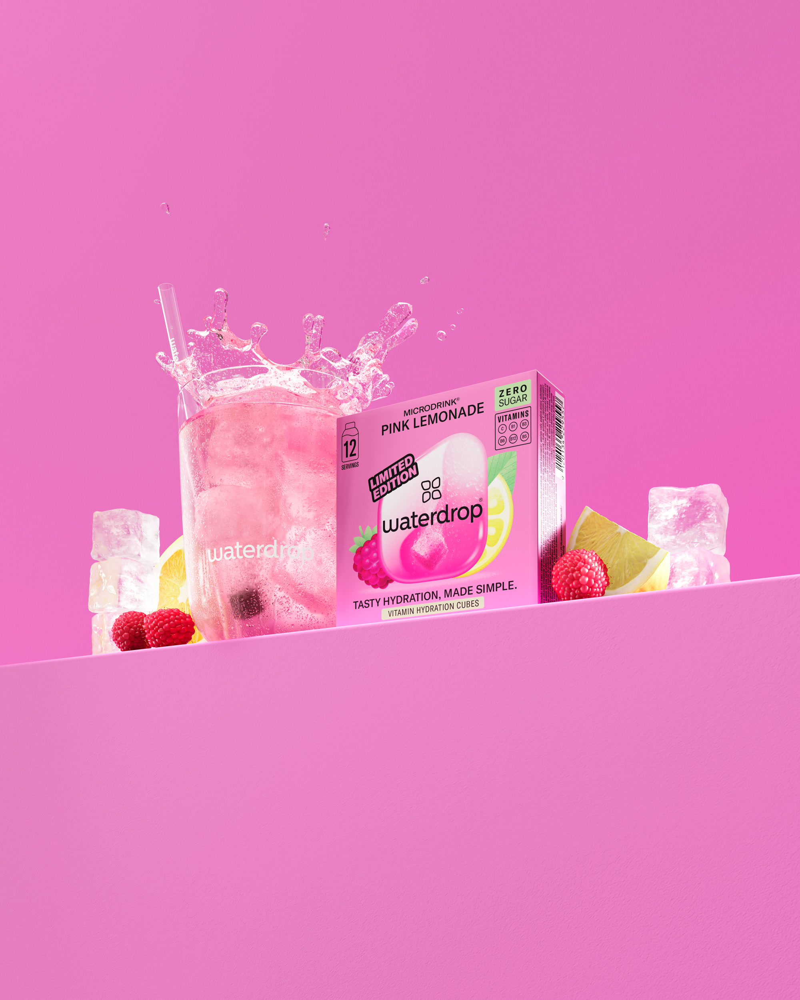
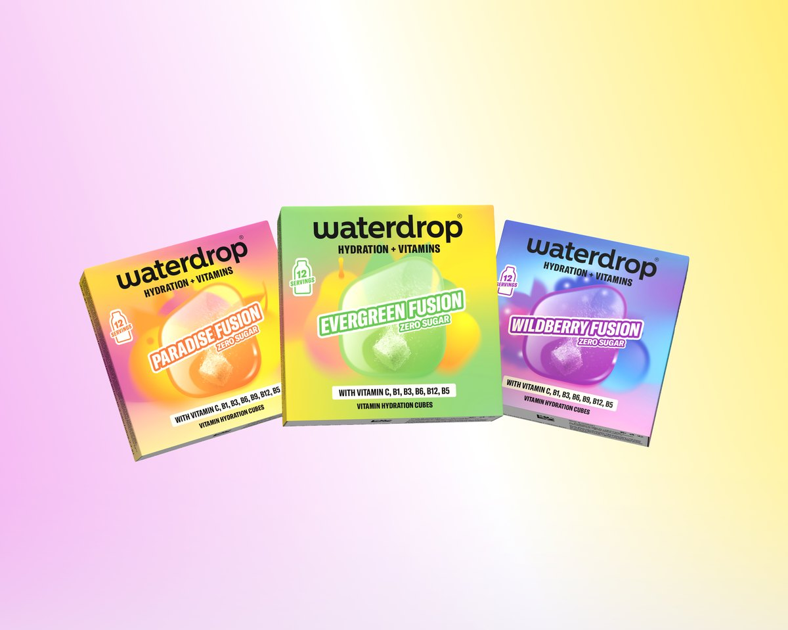

Designer spec creative packs for waterdrop. Each pack holds ready to design Meta image ad mocks with the lockup, on creative copy and asset filenames. Open a pack to hand straight to design.

Sell out scarcity push. 6 mocks across two angles: last chance urgency and the limited edition reason it won't be restocked.
Open pack →
Storewide sale creative pack. 13 mocks spanning offer mechanics, range hero shots and lifestyle scenes for the Days event.
Open pack →